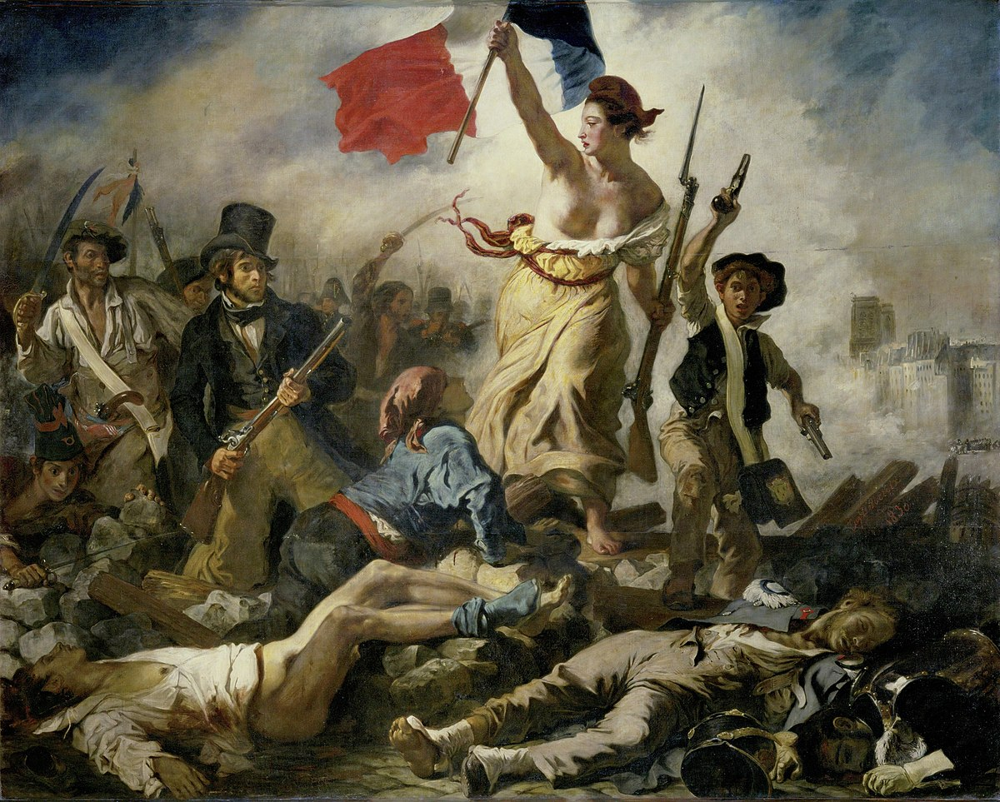

GIRL WITH A PEARL EARRING
Johannes Vermeer
1665
GREAT WAVE OFF KANGAWA
Hokusai
1831

THE ARNOLFINI PORTRAIT
Jan van Eyck
1434
STARRY NIGHT
Vincent van Gogh
1889
THE KISS
LGustav Klimt
1907–1908

LIBERTY LEADING THE PEOPLE
Eugène Delacroix
1830
THE SCREAM
Edvard Munch
1893

MONA LISA
Leonardo Da Vinci
1503

NIGHTHAWKS
Edward Hopper
1942